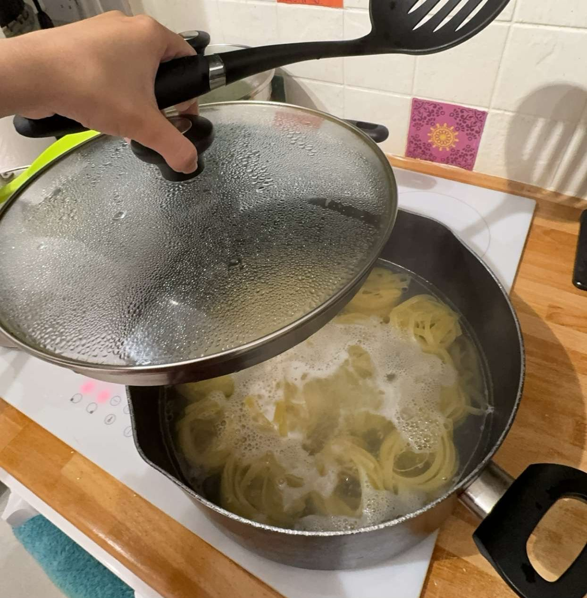

AJWA'S PASTA STATION
The Story of AJWA'S PASTA STATION
In a small, cozy kitchen filled with the aroma of fresh basil and tomato sauce, a young
girl
discovered her love for pasta. Every dish she created was a masterpiece, perfectly
blending
sauces, fresh herbs, and handmade pasta. Her family adored her cooking.
Her biggest supporter was her brother, who believed the world needed to taste her
creations.
"Why keep this magic just within our home?" he encouraged her.
With determination and passion, Ajwa took a bold step forward and opened AJWA'S PASTA
STATION, a
place where every dish tells a story of tradition, love, and authenticity. Using only
the finest
ingredients and recipes, she crafts pasta dishes that transport her customers straight
to the
streets of Italy.
Today, AJWA'S PASTA STATION is more than just a shop; it's a celebration of
flavors, a
journey of passion, and a dream brought to life—one plate of pasta at a time.
